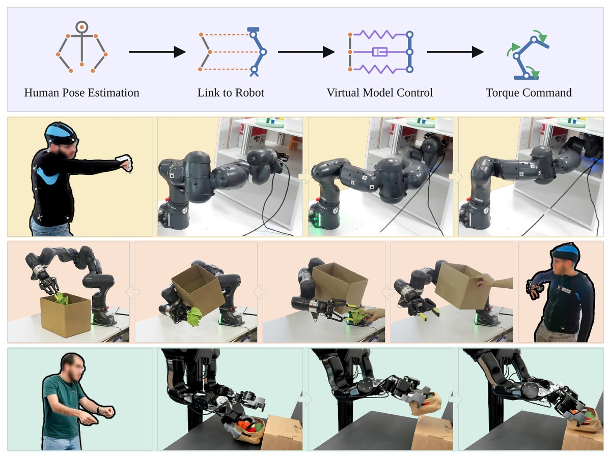

WARM-T: A Whole Arm Teleoperation Framework for Dexterous Manipulation and Robot Learning
Preprint, 2026 Under Review ManipulationNet #3 · 20/20
A whole-arm teleoperation framework that bridges human and robot arm morphologies using Virtual Model Control with distributed virtual springs and dampers. Enables low-latency (14 ms), compliant full-arm and null-space control across heterogeneous 7-DOF robots (Franka FR3, OpenArm 2.0, Sciurus17) without inverse kinematics, and supports augmented demonstration collection for policy learning.
BibTeX
@article{zhou2026warmt,
title = {WARM-T: A Whole Arm Teleoperation Framework for Dexterous Manipulation and Robot Learning},
author = {Zhou, Liyou and Faris, Omar and Pattinson, Sebastian and Forni, Fulvio},
year = {2026}
}